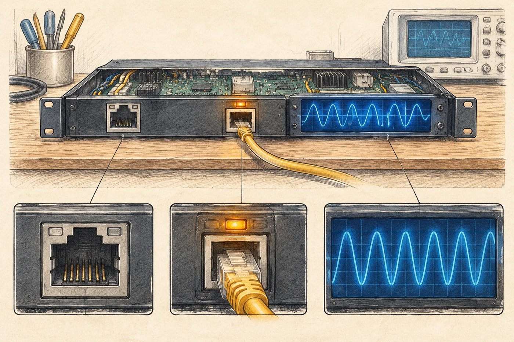
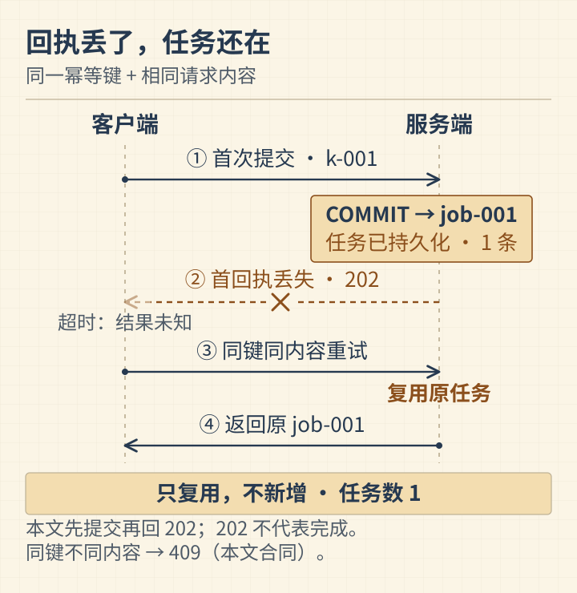
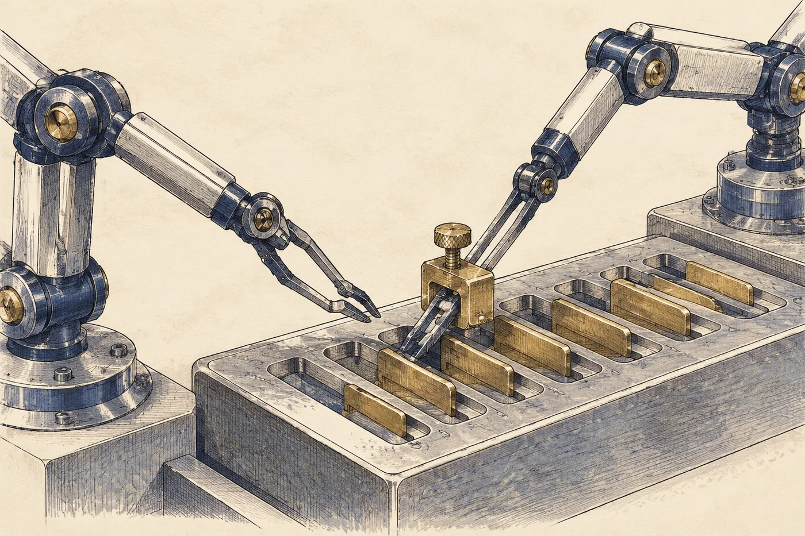
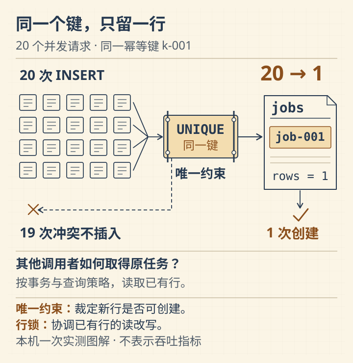
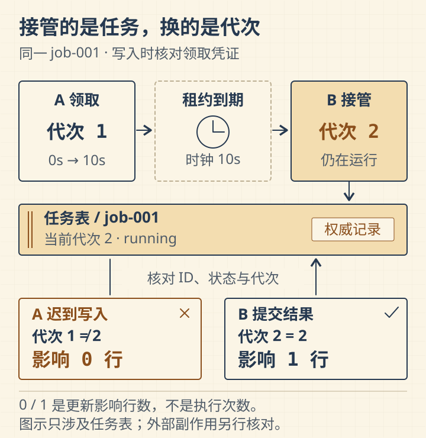

BACKEND / 后端受理链 · BOARD 19 · 2026.11
FIELD NOTES · 一次丢失回执的走查
服务器收到了吗
你按下「提交」，等了几秒，页面只留下「请求超时」。那次提交究竟没到、到了没写，还是写完了、唯独回执没回来？本篇沿同一个任务编号走四站：进程监听、HTTP 受理、PostgreSQL 提交、worker 恢复。第 18 篇查答案的出处；这一次，查的是「已完成」这句话有哪个系统作证。
LISTENER · 接入
谁在听
API 还没资格报错，连接就被拒绝了。先不要改前端，也不要重装依赖：在真正接请求的机器或容器里找那个监听者。

01.1 · 一个端口，三条检查
在 Linux 实验环境，先用 curl -i --max-time 3 http://127.0.0.1:8000/healthz 看响应，再用 ss -lntp 找监听地址和进程。127.0.0.1 只供同一网络命名空间里的进程访问；在容器里用它监听，与能否从宿主访问是两回事。再看路由、端口映射和代理配置。权限不够时，ss 可能不显示进程信息，不能据此断言没有服务。
确定性模拟：固定使用 8000；这里只建模「无人监听」和「监听已被占用」，不模拟丢包或防火墙。第二次绑定失败不改变原监听者。
RECEIPT · 受理
收到不等于做完
最危险的失败，不是服务明确拒绝，而是客户端已经不知道发生了什么。请求超时后，服务器可能还没提交，也可能早已提交，只是回执没送回来。

02.1 · 先给下一次查询一个编号
在本文设计里，POST /jobs 成功提交任务后回 202 Accepted 和 job_id，用 GET /jobs/{id} 查状态。RFC 9110 的 202 不承诺处理成功；「在持久化提交之后才回」是我们额外给出的应用合同，不是状态码本身带来的保证。

确定性模拟：固定作业 job-001，提交成功后丢弃第一次响应。显示的 409 是本文给「同键不同内容」定义的合同，不是所有 API 的统一规则。
TRANSACTION · 提交
谁能写
A 查了一次：没有。B 也查了一次：没有。两边都没有撒谎，却都可能打算写入。光在应用层补一句「先查是否存在」，挡不住并发。

03.1 · 唯一约束负责创建，行锁负责已有行
任务表上给幂等键加唯一约束。用 INSERT … ON CONFLICT DO NOTHING RETURNING …，赢家返回新行，其他请求按既定事务与查询策略获取已有任务。不能把「没返回新行」解释为任务不存在。已存在行的读改写则可用事务与 SELECT … FOR UPDATE；锁会随事务释放。不把慢速网络调用塞进持锁区。

实测 · PostgreSQL 本机一次运行
SOCKET listening | second bind blocked POSTGRESQL 16.13 INSERT attempts=20 inserted=1 rows=1 ROW LOCK held=1 skip_locked_rows=0 FENCE stale_owner_rows=0 current_owner_rows=1
20 个并发客户端尝试插入同键；另用两个连接验证持锁行被跳过，并检查更换持有者后旧写入的影响行数。测试是合成数据、独立本地库；不报告吞吐、生产规模或外部副作用。复跑脚本在本篇仓库 verify/pg-lab.py。
确定性模拟：预设并发顺序；真实 PostgreSQL 结果见上方。无约束路径故意演示竞态，不把后果归咎于数据库。
RECOVERY · 恢复
进程可以消失
第一位 worker 领走任务，跑到一半断电。重启一个进程能恢复人手，但它并不知道前一位已经做了什么；更糟的是，前一位可能只是卡住，稍后还会回来。
04.1 · 改状态时带上领取凭证
首次领取从 queued 到 running，记录领取者、截止时间和代次；超时后由新 worker 接管并推进代次。落结果时同时检查任务 ID、状态与代次：旧 worker 可以继续算，却不能再改这条记录。重试上限、处理超期策略和外部副作用要另定。外部动作若已发出且结果未知，先查回执、对账或交人工，不等于「安全地再执行一次」。

确定性模拟：点击手动推进时钟，租约为 10 个模拟秒。这里只承诺任务表的写入资格，不模拟外部系统的幂等或分布式时钟。
QUICK CARD
如果只带走四句
- 连不上，先找监听者；HTTP 成功也只证明一个端点。
- 超时是观察结果，不是数据库状态；同一操作用同一幂等键。
- 先查再写不是并发保护；唯一约束与事务各守一条边界。
- 重启的是进程，恢复的是任务；接管后，旧执行者失去写入资格。
这次真正动了手的地方很小：只在本地临时数据库争一行、锁一行，再让一位迟到的写入者碰一次壁。后端可以从这么小的一行开始学。先让这行数据经得起追问，再谈发版、指标和集群。
核对资料：HTTP 202 · PostgreSQL INSERT · 行锁与 SKIP LOCKED · Kubernetes 探针